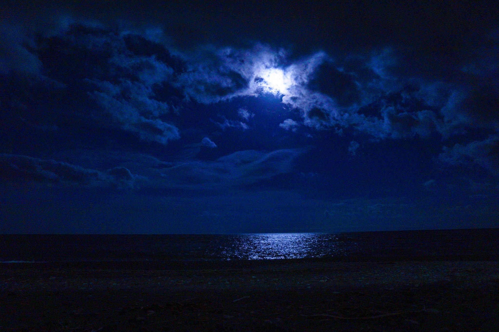

1
6/12から6/21までの10日間。
初日の12日はリビングのソファーでのリラックスした21：00〜22：00の時間、母とテレビで録画してたものを再生して過ごした。映像を見て過ごしたからあまり退屈には感じなかった。
二日目の6/13はバイトをしている17：00〜23：00の中の20：00〜22：00、バイト先のシューティングバーでバイト仲間と過ごした。接客、ドリンク作り、エアガンの調整、コミュニケーションなどと忙しくしていたのであっという間に感じた。
三日目6/14、この日は前に街中で声をかけられていたエステのモニターに行った。場所は表参道パルティール、その中の20：00〜21：00の1時間実施した。担当の神宮司さんに美顔器のレクチャーと紹介と体験をさせてもらって過ごした。
四日目6/15は朝から体調が悪く休息を取っていた20：00〜22：00にした。家で母といたが、体調が悪くて寝ていただけなので、ちょうど良いオフラインタイムだった。
五日目6/16バイト中のシューティングバーでの16：00〜23：00の中の20：00〜22：00で実施。お店が空いてて暇だったのでバイト仲間とW杯のフランスVSオーストラリア戦を主に見ていた。
ここまでの五日間は割と忙しく過ごしていたので、案外あまりオフラインでいることを苦に感じなかった。逆に、オンラインの生活時よりちゃんとした休息が取れたり、人とコミュニケーションを取っていた気がする。

2
余裕に感じてたオフライン生活。後半に入り起きた不便な瞬間。
ここからオフライン生活の折り返し地点。前半の五日間は特に不便に感じる瞬間がなかったため余裕に感じていたが、この折り返し地点を過ぎ、立て続けに不便な事態に遭遇した。六日目6/17、予定がなかったのでリビングのソファーでリラックスした21：00〜22：00。母とドラマの放送を見ていた。ドラマ中に医療関係のワードで、疑問を感じた時に、オフラインで検索する事ができなく、もやもやした。
七日目6/18はネイルからの帰り道にサロンから家までの２〜３駅分の道のりを運動がてら一人で歩いてた20：00〜21：00。少し道に迷いナビが使えなかったのがとても不便だったのと、歩いている間、歩きスマホの防止にはなったが、すこし暇になってしまったとき退屈な時間に感じた。
八日目の6/19は友人と原宿のアボカド屋さんでご飯を食べながらW杯の日本VSコロンビア戦を見てた。友人がトイレなどに席を立った時一人になると、オンラインでスマホを使えないのが退屈で、時間の潰し方が分からなかった。
6/20九日目。オフライン実施期間もあと少し。この日は友人と豊洲で開催されたイベントに行き、それが終わった後にフードコートでご飯を食べ、８月のライブツアーの交通手段や予算の相談していた20：00〜22：00でした。予約や検索など、何をするにおいてもネットが使えないとものすごく不便なことを実感した。
6/21十日目の最終日。家でエントリーシートを書いていた20：00〜22：00を過ごしていたので、。作業に集中できて逆によかった。